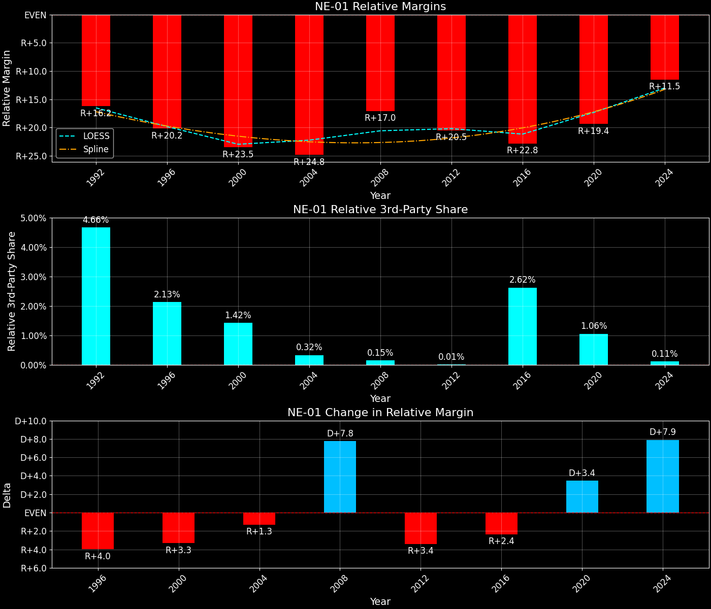
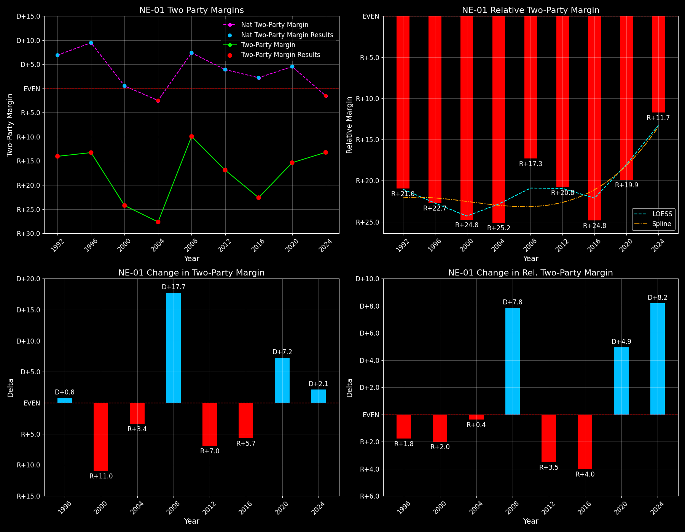

Nebraska's 1st Congressional District (NE-01)

Margins · 3rd-Party share · Pres. deltas

Relative margins · Relative 3rd-Party · Rel. deltas
Nebraska's 1st Congressional District (NE-01) — Total Data
| Year | D | R | State Margin | Nat. Margin | Rel. Margin | Total votes | EVs |
|---|---|---|---|---|---|---|---|
| 1992 | 80,696(32.6%) | 107,081(43.2%) | R+10.6 | D+5.6 | R+16.2 | 247,751 | 1 |
| 1996 | 87,713(38.1%)(Δ 7,017) | 114,560(49.7%)(Δ 7,479) | R+11.7(Δ R+1.0) | D+8.5(Δ D+3.0) | R+20.2(Δ R+4.0) | 230,330 | 1 |
| 2000 | 86,946(35.9%)(Δ -767) | 142,562(58.9%)(Δ 28,002) | R+23.0(Δ R+11.3) | D+0.5(Δ R+8.0) | R+23.5(Δ R+3.3) | 242,023 | 1 |
| 2004 | 96,314(35.7%)(Δ 9,368) | 169,888(63.0%)(Δ 27,326) | R+27.3(Δ R+4.3) | R+2.5(Δ R+3.0) | R+24.8(Δ R+1.3) | 269,771 | 1 |
| 2008 | 121,411(44.3%)(Δ 25,097) | 148,179(54.1%)(Δ -21,709) | R+9.8(Δ D+17.5) | D+7.3(Δ D+9.7) | R+17.0(Δ D+7.8) | 273,893 | 1 |
| 2012 | 108,082(40.8%)(Δ -13,329) | 152,021(57.4%)(Δ 3,842) | R+16.6(Δ R+6.8) | D+3.9(Δ R+3.4) | R+20.5(Δ R+3.4) | 264,712 | 1 |
| 2016 | 100,132(35.5%)(Δ -7,950) | 158,642(56.2%)(Δ 6,621) | R+20.7(Δ R+4.1) | D+2.1(Δ R+1.8) | R+22.8(Δ R+2.4) | 282,338 | 1 |
| 2020 | 132,261(41.1%)(Δ 32,129) | 180,290(56.0%)(Δ 21,648) | R+14.9(Δ D+5.8) | D+4.5(Δ D+2.4) | R+19.4(Δ D+3.4) | 321,886 | 1 |
| 2024 | 136,153(42.5%)(Δ 3,892) | 177,666(55.5%)(Δ -2,624) | R+13.0(Δ D+2.0) | R+1.5(Δ R+5.9) | R+11.5(Δ D+7.9) | 320,194 | 1 |
Column explanations
- Δ
- Change (delta) in the value from the previous election year.
- Year
- Election year.
- D
- Number of votes for the Democratic candidate (raw count(pct%)).
- R
- Number of votes for the Republican candidate (raw count(pct%)).
- State Margin
- Margin between the two major-party candidates, including third-party votes ((D - R)/total).
- Nat. Margin
- The national presidential margin for that year, including third-party votes ((D_total - R_total)/total_votes).
- Rel. Margin
- The presidential margin relative to the national presidential margin (Margin - Nat. Margin).
- Total votes
- Total voter turnout or ballots cast (when provided).
- EVs
- Number of electoral votes allocated to this state or unit.
Nebraska's 1st Congressional District (NE-01) — Third-Party Data
| Year | D | R | Other votes | State 3rd-Party Share | 3rd-Party Nat. Share | 3rd-Party Rel. Share |
|---|---|---|---|---|---|---|
| 1992 | 80,696(32.6%) | 107,081(43.2%) | 59,974(24.2%) | 24.21% | 19.55% | 4.66% |
| 1996 | 87,713(38.1%)(Δ 7,017) | 114,560(49.7%)(Δ 7,479) | 28,057(12.2%) | 12.18% | 10.05% | 2.13% |
| 2000 | 86,946(35.9%)(Δ -767) | 142,562(58.9%)(Δ 28,002) | 12,515(5.2%) | 5.17% | 3.75% | 1.42% |
| 2004 | 96,314(35.7%)(Δ 9,368) | 169,888(63.0%)(Δ 27,326) | 3,569(1.3%) | 1.32% | 1.00% | 0.32% |
| 2008 | 121,411(44.3%)(Δ 25,097) | 148,179(54.1%)(Δ -21,709) | 4,303(1.6%) | 1.57% | 1.42% | 0.15% |
| 2012 | 108,082(40.8%)(Δ -13,329) | 152,021(57.4%)(Δ 3,842) | 4,609(1.7%) | 1.74% | 1.73% | 0.01% |
| 2016 | 100,132(35.5%)(Δ -7,950) | 158,642(56.2%)(Δ 6,621) | 23,564(8.3%) | 8.35% | 5.73% | 2.62% |
| 2020 | 132,261(41.1%)(Δ 32,129) | 180,290(56.0%)(Δ 21,648) | 9,335(2.9%) | 2.90% | 1.84% | 1.06% |
| 2024 | 136,153(42.5%)(Δ 3,892) | 177,666(55.5%)(Δ -2,624) | 6,375(2.0%) | 1.99% | 1.88% | 0.11% |
Column explanations
- Year
- Election year.
- D
- Number of votes for the Democratic candidate (raw count(pct%)).
- R
- Number of votes for the Republican candidate (raw count(pct%)).
- Other votes
- Number of votes for third-party (other) candidates (raw count(pct%)).
- State 3rd-Party Share
- Share of the vote received by third-party (other) candidates.
- 3rd-Party Nat. Share
- The national third-party share for that year (3rd-Party votes / total votes).
- 3rd-Party Rel. Share
- Third-party share relative to the national third-party share (3rd-Party share - Nat. 3rd-Party share).

Two-party margins · relative · deltas
Nebraska's 1st Congressional District (NE-01) — Two-Party Data
| Year | D | R | 2-Party Margin | 2-Party Nat. Margin | 2-Party Rel. Margin | EVs |
|---|---|---|---|---|---|---|
| 1992 | 80,696(43.0%) | 107,081(57.0%) | R+14.1 | D+6.9 | R+21.0 | 1 |
| 1996 | 87,713(43.4%)(Δ 7,017) | 114,560(56.6%)(Δ 7,479) | R+13.3(Δ D+0.8) | D+9.5(Δ D+2.6) | R+22.7(Δ R+1.8) | 1 |
| 2000 | 86,946(37.9%)(Δ -767) | 142,562(62.1%)(Δ 28,002) | R+24.2(Δ R+11.0) | D+0.5(Δ R+8.9) | R+24.8(Δ R+2.0) | 1 |
| 2004 | 96,314(36.2%)(Δ 9,368) | 169,888(63.8%)(Δ 27,326) | R+27.6(Δ R+3.4) | R+2.5(Δ R+3.0) | R+25.2(Δ R+0.4) | 1 |
| 2008 | 121,411(45.0%)(Δ 25,097) | 148,179(55.0%)(Δ -21,709) | R+9.9(Δ D+17.7) | D+7.4(Δ D+9.9) | R+17.3(Δ D+7.8) | 1 |
| 2012 | 108,082(41.6%)(Δ -13,329) | 152,021(58.4%)(Δ 3,842) | R+16.9(Δ R+7.0) | D+3.9(Δ R+3.4) | R+20.8(Δ R+3.5) | 1 |
| 2016 | 100,132(38.7%)(Δ -7,950) | 158,642(61.3%)(Δ 6,621) | R+22.6(Δ R+5.7) | D+2.2(Δ R+1.7) | R+24.8(Δ R+4.0) | 1 |
| 2020 | 132,261(42.3%)(Δ 32,129) | 180,290(57.7%)(Δ 21,648) | R+15.4(Δ D+7.2) | D+4.5(Δ D+2.3) | R+19.9(Δ D+4.9) | 1 |
| 2024 | 136,153(43.4%)(Δ 3,892) | 177,666(56.6%)(Δ -2,624) | R+13.2(Δ D+2.1) | R+1.5(Δ R+6.0) | R+11.7(Δ D+8.2) | 1 |
Column explanations
- Δ
- Change (delta) in the value from the previous election year.
- Year
- Election year.
- D
- Number of votes for the Democratic candidate (raw count(pct%)).
- R
- Number of votes for the Republican candidate (raw count(pct%)).
- 2-Party Margin
- Margin between the two major-party candidates, ignoring third-party votes ((D - R)/(D + R)).
- 2-Party Nat. Margin
- The national presidential margin for that year, including third-party votes ((D_total - R_total)/total_votes).
- 2-Party Rel. Margin
- The presidential margin relative to the national presidential margin (Margin - Nat. Margin).
- EVs
- Number of electoral votes allocated to this state or unit.